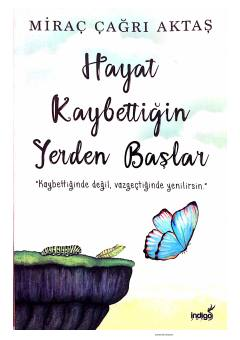

HKHayotdagi qiyinchiliklarni yengib o'tib, yangi boshlanishlar qilish haqidagi motivatsion qo'llanma.
Ushbu kitob insonning hayotdagi qiyinchiliklar va muvaffaqiyatsizliklardan so'ng qanday qilib qayta tiklanishi va o'zini topishi haqida hikoya qiladi. Muallif o'quvchilarga hayotni to'xtagan joyidan emas, balki yangi kuch va iroda bilan davom ettirish yo'llarini ko'rsatib beradi.